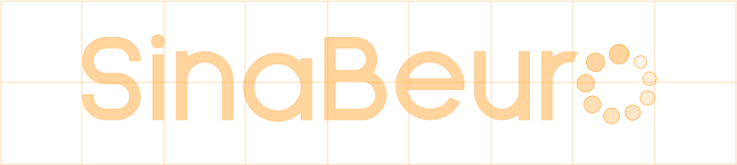
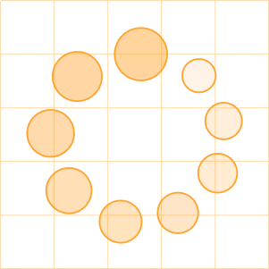
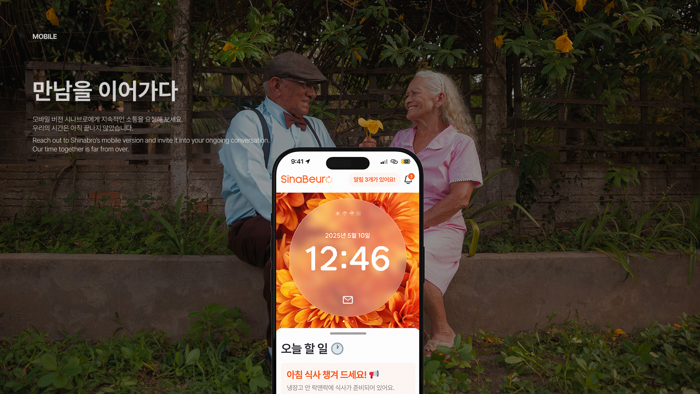

Logo

시나브로, 마음을 잇다
느리지만 확실하게 마음을 잇는 대화의 회복
느리지만 확실하게 마음을 잇는 대화의 회복
시나브로는 노년의 부부가 잃어버린 정서적 연결을 되찾을 수 있도록,
감정을 존중하며 천천히 스며드는 소통을 디자인합니다.
감정을 존중하며 천천히 스며드는 소통을 디자인합니다.
Icon

기존의 로딩 아이콘은 기다림의 피로와 불편을 상징하지만,
우리에게는 감정이 스며드는 시간, 마음을 잇는 준비의 순간 을 의미합니다.
우리에게는 감정이 스며드는 시간, 마음을 잇는 준비의 순간 을 의미합니다.
로딩을 단절이 아닌 연결을 위한 숨 고르기
로 바라보며,
느림을 존중하는 커뮤니케이션 디자인 철학 을 그 안에 담아냅니다.
느림을 존중하는 커뮤니케이션 디자인 철학 을 그 안에 담아냅니다.
반복되는 원형 회전은 호흡, 리듬, 공감의 순환을 상징하며,
원형의 시계 안에서 더욱 직관적이고 깊이 있게 감각 속으로 스며듭니다.
원형의 시계 안에서 더욱 직관적이고 깊이 있게 감각 속으로 스며듭니다.


ⓒ SinaBeuro 2025 All rights reserved.
노년의 마음을 잇는,
느리지만 따뜻한 커뮤니케이션
시나브로
느리지만 따뜻한 커뮤니케이션
시나브로
UIUX Design Team
KIM MINJAE
JO YEONSOO
JEONG HISONG
SHIN CHAEUN
SON JUHYEON
JO YEONSOO
JEONG HISONG
SHIN CHAEUN
SON JUHYEON
디자인에 사용된 이미지 및 영상은 생성형 AI를 활용한 이미지를
2차적으로 가공하였음을 밝힙니다.
또한, 모든 이미지 및 영상은 상업적 용도가 아닌 교육용으로 사용되었음을 밝힙니다.
또한, 모든 이미지 및 영상은 상업적 용도가 아닌 교육용으로 사용되었음을 밝힙니다.
The images and videos used in the design were secondarily processed
from visuals generated using generative AI.
All visual materials were used strictly for educational purposes and not for any commercial use.
All visual materials were used strictly for educational purposes and not for any commercial use.